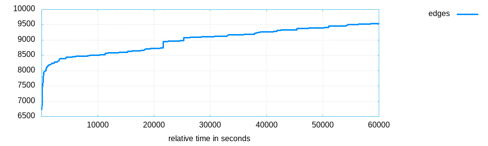
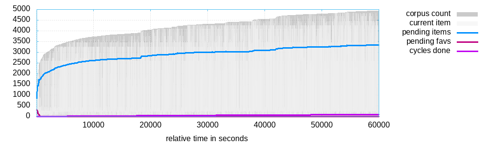
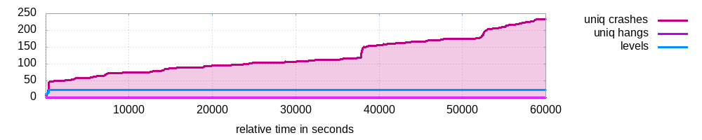
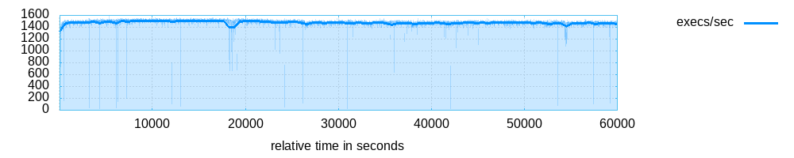

<table style="font-family: 'Trebuchet MS', 'Tahoma', 'Arial', 'Helvetica'">
<tr><td style="width: 18ex"><b>Banner:</b></td><td>bin/wasm-opt</td></tr>
<tr><td><b>Directory:</b></td><td>/home/usan/meas/aflver/binaryen/afl/opt_out/default</td></tr>
<tr><td><b>Generated on:</b></td><td>Fri 31 May 2024 06:45:53 AM PDT</td></tr>
</table>
<p>

<p>
<p>


